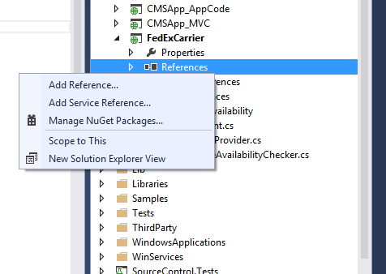
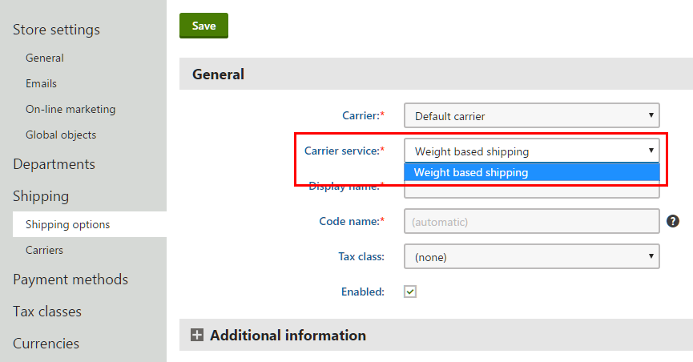
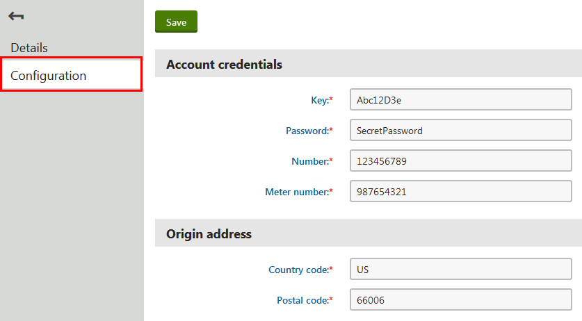

Implementing custom shipping carrier providers
To create shipping options not supported by Kentico by default, implement a custom shipping carrier provider. Shipping carrier providers are code packages that define shipping carriers, which you can add to your Kentico instance. The shipping carriers then enable creation of new shipping options.
Shipping carrier providers can either use offline calculation of the shipping costs (for example, shipping based on weight, the shipping address country, date, etc.) or online cost calculation, which requires communication with other systems, typically via APIs of shipping companies (for example, FedEx, USPS, Australia Post). Carrier providers of this type can then provide a real-time shipping costs calculation or shipping option availability check. You can also combine both approaches to achieve your desired result.
You can create an installation package out of your carrier provider module and then install the package on other instances of Kentico.
Relationship between carrier providers and shipping options
When you a add shipping carrier provider to Kentico, you can create a new shipping carrier in the administration interface. Shipping carriers contain services, which are types of shipping provided by the carrier. Administrators can then create shipping options based on the carrier's services.
For example, you can create a custom provider for a FedEx carrier and two services – International Priority shipping and International Economy shipping. Then administrators create shipping options based on the carrier's services. They can also create multiple options based on one service.
Creating carrier providers
To implement a custom shipping carrier provider, you need to create a class that inherits from the ICarrierProvider interface. If you wish to allow configuration of the carrier in the administration interface, you also need to create a corresponding module.
Create a custom module to represent your carrier.
For convenient distribution of the carrier to other Kentico instances, you can create an installation package for the module. See Example - Creating a packageable module for more information.
(Optional) Define a configuration interface for your carrier (for example, with login credentials for communication with a shipping company's API). Open the Modules application and edit the module representing your carrier. On the User interface tab, create a UI element to be used as the configuration tab.
The UI element must be assigned to the carrier's module. Otherwise, it will not be included in installation packages.
If your carrier does not need any configuration, you do not need to create any UI element.
Each carrier can have only one configuration tab (UI element).
To calculate shipping costs, shipping companies usually require the address from which packages are sent. You can create a text box on the configuration tab to allow administrators to set this address.
(Optional) As you did for the carrier, you can also create UI elements as configuration tabs for the carrier's services. Configuration tabs of services are then displayed while editing any shipping option based on the given service.
Every service can have one configuration tab.
(Optional) If you need to communicate with an API of a shipping company, you may need to add their API web references to your Kentico instance:
Download a WSDL file from a website of the shipping company (for example, FedEx offers its WSDL files in their Documentation and Downloads section).
Right-click References in your carrier project in the Visual Studio Solution Explorer and click Add Service Reference.

Location of the Add Service Reference buttonClick Advanced in the Add Service Reference dialog.
In the Service Reference Settings dialog, click Add Web Reference.
Enter the path of your downloaded WSDL file, and click Add Reference.
Visual Studio then generates a new class according to the reference file automatically. You can use the API's methods when implementing the carrier provider, for example in the GetPrice and CanDeliver methods.
Create a new class in your module project in Visual Studio (for example MyCustomCarrier.cs) that implements the ICarrierProvider interface.
Implement the CarrierProviderName property.
stringCarrierProviderName{get;}The property returns the name of the carrier. The name is displayed in the administration interface when working with carriers or shipping options.
Implement the GetServices method.
List<KeyValuePair<string,string>> GetServices()The method returns a list of code names (the first element in the list) and display names (the second element in the list) of the carrier's services. The code names serve as identifiers in code and macros. Display names are shown in the administration interface when working with shipping options.

List of servicesIf you have a multilingual site, create resource strings to store the display names of your services.
Example// Returns 2-day, priority and standard overnight FedEx shipping servicespublicList<KeyValuePair<string,string>> GetServices(){SortedDictionary<string,string> services =newSortedDictionary<string,string>{{"PRIORITY_OVERNIGHT","{$com.fedexcarrierprovider.priorityovernight$}"},{"STANDARD_OVERNIGHT","{$com.fedexcarrierprovider.standardovernight$}"},{"FEDEX_2_DAY","{$com.fedexcarrierprovider.2day$}"}};returnservices.ToList();}Implement the GetPrice method.
decimalGetPrice(Delivery delivery,stringcurrencyCode)The method calculates shipping costs of the specified delivery and then returns the total shipping cost in the specified currency.
Parameters of GetPrice – the Delivery class
The Delivery class represents a set of items that the store ships using a shipping option. The class contains the following properties:
IEnumberable<DeliveryItem> Items – the shipped items. Only products and product options of the Products type are present.
DateTime ShippingDate – the date when the store passed the package to the shipping company
decimal Weight – total weight of the shipped package in the unit specified in the ECommerceSettings.MassUnit() setting
ShippingOptionInfo ShippingOption – the shipping option used for the delivery
IAddress DeliveryAddress – the address where the package is delivered
IDataContainer CustomData – you can use this property for custom data
When communicating with the API of a shipping company that supports a different currency than the one used by the order, you need to perform currency conversions.
You can use exchange rates entered in the Store configuration application by using the CurrencyConverter.Convert(decimal amount, string inCurrencyCode, string toCurrencyCode, int siteID) method, where:
decimal amount – sets the price in the original currency
string inCurrencyCode – sets the code of the original currency
string toCurrenceCode – sets the code of the currency to which the value is converted
int siteID – the ID of the site whose exchange rates and currency options are used
ExampleCurrencyConverter.Convert(shippingPrice,"USD", currencyCode, delivery.ShippingOption.ShippingOptionSiteID);Implement the CanDeliver method.
boolCanDeliver(Delivery delivery)The method checks if the shipping option (specified in the Delivery parameter) is available for shipping. See the information about the GetPrice method to learn about the available parameters.
If you want your services to always be available, return true.
publicboolCanDeliver(Delivery delivery){returntrue;}Implement the GetConfigurationUIElementGUID method.
Guid GetConfigurationUIElementGUID()The method returns the GUID of a UI element that the carrier uses as its configuration tab. The system then displays the configuration tab while editing a carrier on the Shipping -> Carriers tab in the Store configuration application.

Location of another configuration tab
If the carrier does not have a configuration tab, return Guid.Empty. To get the GUID of a UIElement, you can call the UIElementInfoProvider.GetUIElementInfo(string resourceName, string elementName) method available in the CMS.Modules namespace.ExampleusingCMS.Modules;/// <summary>/// Returns the Guid of the carrier's configuration UI element, where moduleName is the code name/// of the module and elementName is the code name of the UIElement./// </summary>publicGuid GetConfigurationUIElementGUID(){UIElementInfo ui = UIElementInfoProvider.GetUIElementInfo(moduleName, elementName);returnui.ElementGUID;}Implement the GetServiceConfigurationUIElementGUID method.
Guid GetServiceConfigurationUIElementGUID(stringserviceName)The method returns the GUID of a UI element that the service (specified with by code name in the serviceName property) uses as its configuration tab. You can get the UI element GUID as in the GetConfigurationUIElementGUID method. The system then displays the configuration tab while editing a shipping option in the Store configuration application on the Shipping -> Shipping options tab. For example, the Weight based shipping service of the Default carrier has the Shipping costs tab. For services that do not have a configuration tab, return Guid.Empty.
Now you have a shipping provider that enables you to create carriers and then shipping options. If you create an installation package for the carrier's module, you can distribute the carrier to other Kentico instances.
To see a sample carrier provider implementation that calculates shipping costs based on the country, see: Example - Creating a shipping carrier provider